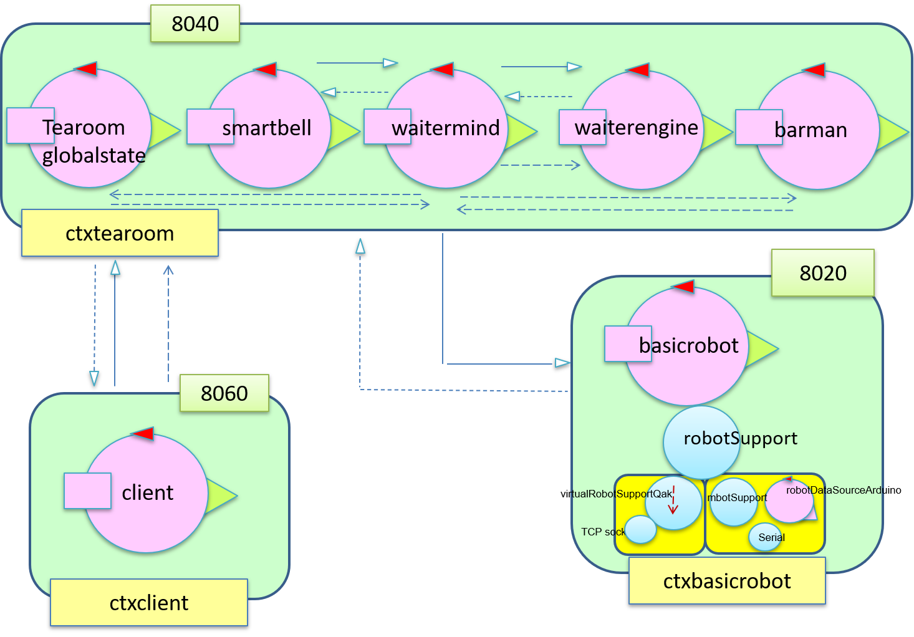

La prima conseguenza che porta la gestione di più di un
client è quella di dover assegnare un
table ad esso. Come migliore scelta è stata presa quella di verificare
prima il
table uno e poi il due perchè il
table uno è quello più vicino alla porta.
Dall'analisi dei requisiti emerge la necessità di introdurre un
timer in modo da tenere sotto controllo il tempo trascorso e quello rimanente dei task interrompibili.
Questo timer riceve un Dispatch con l'indicazione del tempo da cui partire.
Dunque, quando si interrompe il task clean, viene memorizzato il tempo trascorso in modo da non dover ricominciare tutto da capo.
Come è emerso negli sprint precedenti, serve memorizzare lo stato del sistema. Come scelta si è preferito memorizzarlo all'interno del
waiter: si veda lo
sprint 1.
E' stato inserito un'altro
QActor perchè oltre a rendere il sistema più snello, questo approccio fa svolgere ad ogni attore un compito ben preciso:
-
waitermind: "mente" del waiter;
-
waiterengine: esegue gli ordini del mind;
-
tearoomglobalstate: waitermind interroga questo attore per ottenere lo stato corrente della tearoom.
Sicuramente il numero dei messaggi aumenta ma considerando questo caso specifico (vedi requisiti) non si viene a creare un collo di bottiglia da mettere in crisi il sistema.
Gli stati dei tavoli devono essere memorizzati da qualche parte. Ci aiutiamo tramite l'uso di Prolog perchè il QAK lo supporta.
Dunque, da un punto di
vista logico il nostro sistema è formato da più attori in contesti diversi:

Di seguito è riportato il
modello.
All'avvio del
waiter si controlla subito che i
table siano puliti perchè è possibile che siano sporchi dalla serata del giorno prima.
tearoom.qak
client.qak